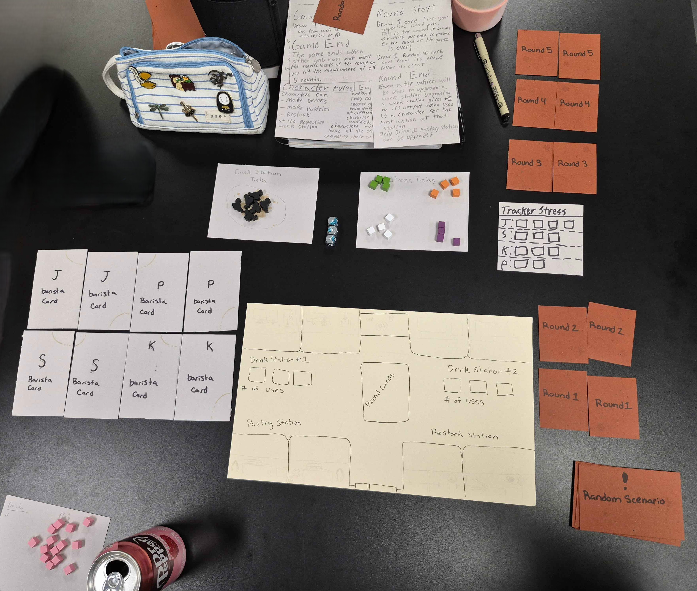

The Last Shift
Last Shift is a single player board game about managing the stress of your workers and pushing them to the limit, so you can finish your Last shift
It was made for a local tabletop game jam by me and @the_creativenoodle. She did all of the art
You can't really play this unless you remake it...
This was my third board game I've attempted to make, and it was a lot of fun. For my first two attempts I tried to be really gimmicky and use physical space and pieces a lot but those turned out to not be fun at all. I'm glad that on the first day I decided to try and do something more fundamental instead of trying to play around with trick shots again
The specifics of the rules don't really matter for this, but I'll give you a basic idea. The game lasts five rounds, and you have to hit a quota of pastries and drinks made each round. You make pastries and drinks by having your workers use an action at drink or pastry station. They can make more if you stress them out. You stress them out too much they leave at the end of the round. The quotas high enough that you almost always need to stress workers out to continue into the next round
I can say that the design of the game didn't end up being the best. It was a game that was fun and stressful but only really for the first play through. The optimal strategy of the game is intuitive and doesn't get shaken up enough for replays. I think we did a good job trying to work with fundamentals of table top games and the judges were good resources on what exactly a worker placement or engine building game is
The judges had a lot of wonderful things to say about it during their play sessions and one them even suggested that we publish it (but you know how that is). We'll keep working on it, but it'll be a time before we really pick it up again

